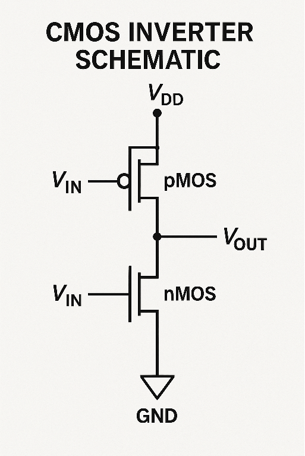

Design and analyze a transistor-level CMOS inverter using SPICE
Schematic
Parameters
SPICE Code
Results
CMOS Inverter Schematic
CMOS Inverter Schematic PlaceholderImage not found. Please add an image named cmos_inverter_schematic.png to the images folder.'">
Circuit Description
The CMOS inverter consists of:
PMOS transistor (M1) connected between VDD and output
NMOS transistor (M2) connected between output and GND
Common input node connected to both transistor gates
When input is LOW, PMOS is ON and NMOS is OFF, making output HIGH.
When input is HIGH, PMOS is OFF and NMOS is ON, making output LOW.
Learning Objectives:
Understand the relationship between transistor sizes and switching characteristics
Learn how to optimize inverter performance through parameter adjustment
Analyze the impact of supply voltage on circuit behavior
Learn SPICE syntax and circuit description through hands-on editing
Develop skills in writing and validating SPICE netlists
Understand common SPICE errors and how to fix them
Circuit Parameters
1V5V5V
Hint: Higher VDD increases power consumption but improves noise margins
0.5μm2.0μm10.0μm
Hint: PMOS width affects rise time and high-to-low transition
0.5μm1.0μm10.0μm
Hint: NMOS width affects fall time and low-to-high transition
0.1μm0.18μm1.0μm
Hint: Channel length affects current drive and switching speed
Note on W/L Ratio
The typical Wp/Wn ratio for a symmetrical CMOS inverter is approximately 2:1 to compensate for the lower hole mobility in PMOS compared to electron mobility in NMOS.
SPICE Netlist
This is the SPICE netlist for the CMOS inverter circuit with the current parameters:
* CMOS Inverter SPICE Netlist
* Power Supply
VDD vdd 0 DC 5V
* Input Voltage Source (for DC sweep)
VIN in 0 DC 0V
* PMOS Transistor
M1 out in vdd vdd PMOS W=2.0u L=0.18u
* NMOS Transistor
M2 out in 0 0 NMOS W=1.0u L=0.18u
* MOSFET Model Parameters
.MODEL NMOS NMOS (LEVEL=3 TOX=3.5E-9 VTO=0.5 GAMMA=0.2 PHI=0.6)
.MODEL PMOS PMOS (LEVEL=3 TOX=3.5E-9 VTO=-0.5 GAMMA=0.2 PHI=0.6)
* Analysis Commands
.DC VIN 0 5 0.01
.PRINT DC V(in) V(out)
.END
SPICE Commands
.DC - Performs DC sweep analysis
.TRAN - Performs transient analysis
.MODEL - Defines MOSFET model parameters
.PRINT - Specifies output variables
Simulation Results
Understanding the Results
The DC analysis shows the Voltage Transfer Characteristic (VTC) of the inverter, which plots output voltage vs. input voltage.
The transient analysis shows how the output responds to changes in the input over time, allowing measurement of propagation delays.
By varying parameters like transistor widths, you can observe how they affect the inverter's performance characteristics.